C++ 编程基础教程
作者：TeliuTe 来源：基础教程网
Geany 可以在新建的时候，选择 c/c++ 源程序，通过颜色来标记不同代码，下面我们来看一个练习；
1、启动 Geany
1）点菜单“应用程序－编程－Geany”，打开编程窗口；
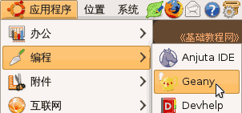
2）出来一个 Geany 编程窗口，在工具栏左边，点“新建”按钮旁边的下拉按钮；
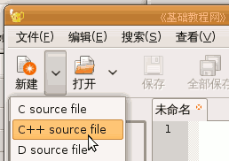
3）在出来的列表中选择第二个“C++ source file”，新建c++源文件，自动新建一个默认的“未命名.cpp”；
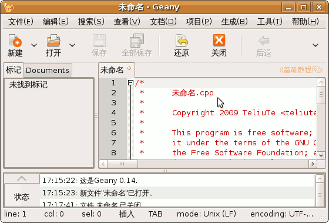
4）红色是注释包括文件名、作者、版权、简介等信息，
点菜单“文件－另存为”，以 hello 为文件名保存到自己的文件夹，后面的 .cpp 也保留着，如果没有文件夹就先新建一个；
5）往下拉下面蓝色部分是代码，已经自动输入了几行；
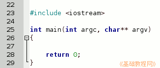
2、输入代码
1）在下面找到蓝色的 return 0; ，在它上面一行输入一行 std::cout << "hello world";
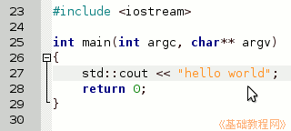
这个程序的另外一种写法是，使用名字空间 using namespace std;
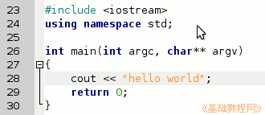
2）然后点工具栏上的“保存”按钮，保存一下文件；
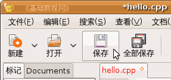
3）然后点菜单“生成－编译”命令，编译代码，下面的信息窗口提示“编译成功”；
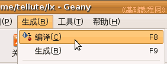 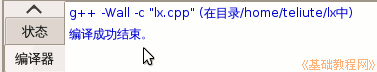
4）再点菜单“生成－生成”命令，生成可执行程序，下面的信息窗口也提示“编译成功”；
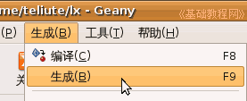
5）再点菜单“生成－执行”命令，出来一个小黑色终端窗口，里面是运行的结果，显示一行“hello world”，按回车键返回；
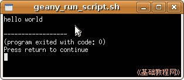
6）默认是 xtream 终端，你可以点菜单“编辑－首选项－工具－虚拟终端－浏览”，换成 gnome-terminal，这个要漂亮些；
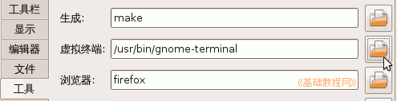
7）如果提示“找不到g++”，就到新立得软件包管理器中安装；
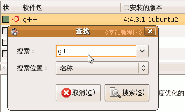
本节学习了在Ubuntu中新建 c++ 源程序的基本操作，如果你成功地完成了练习，请继续学习下一课内容；
本教程由86团学校TeliuTe制作|著作权所有
基础教程网：http://teliute.org/
美丽的校园……
转载和引用本站内容，请保留版权信息和本站链接。